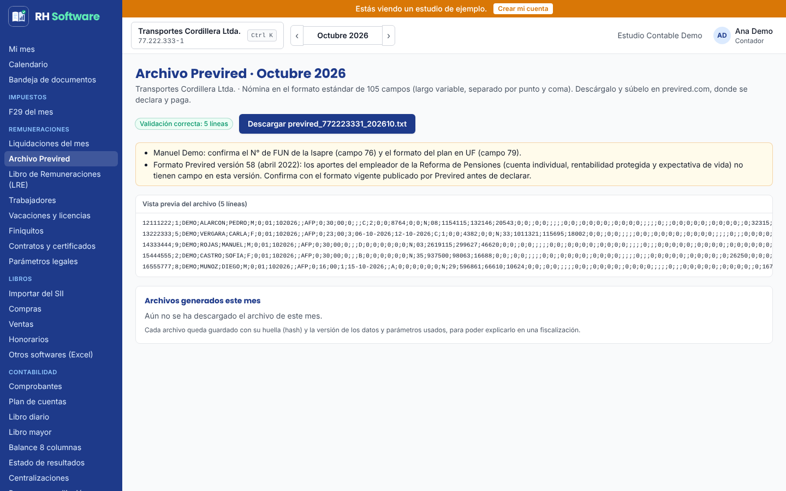
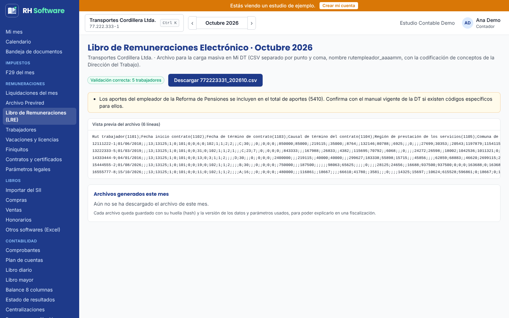
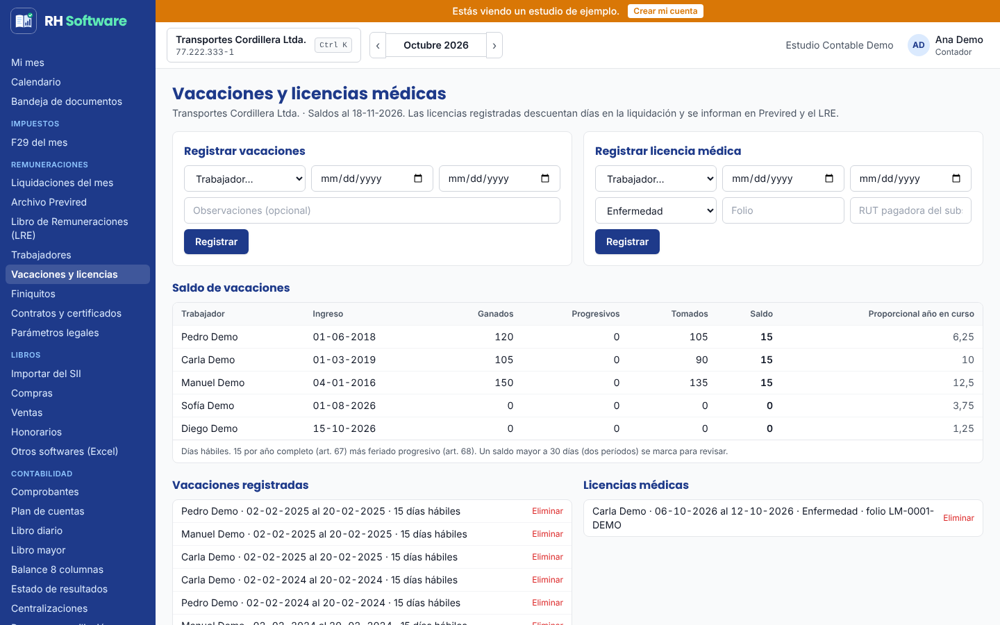
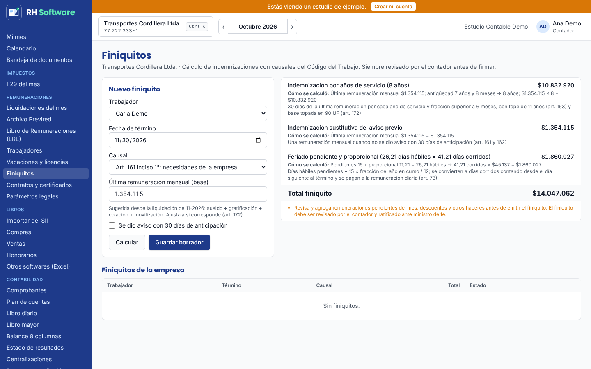
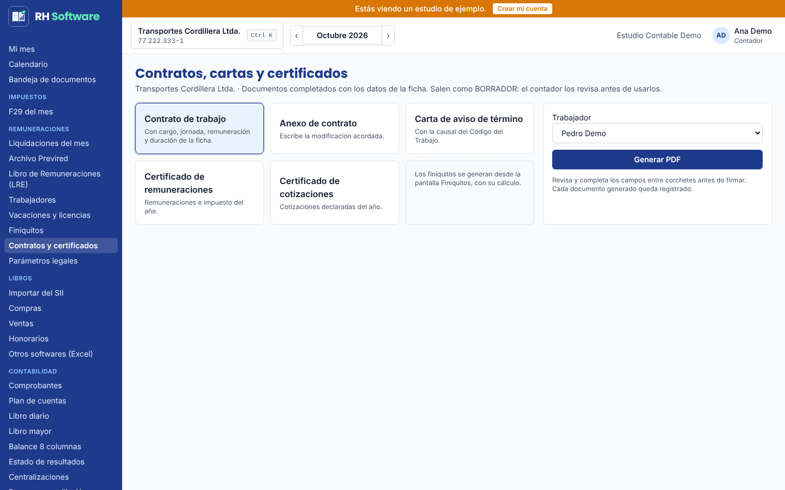

Recorrido en video
Pantallas en orden de uso





Archivos de ejemplo generados
- previred_761112228_202610.txt — Archivo Previred de octubre del Almacén (105 campos, separado por punto y coma).
- 761112228_202610.csv — LRE de octubre del Almacén (nombre rutempleador_aaaamm).
- informe-validacion.md — Informe de validación de ambos archivos (errores, avisos y hash).
- contrato-ejemplo.pdf — Contrato de trabajo generado desde la ficha (borrador para revisión).
Qué debe verificar la socia contadora
- El archivo Previred: pedir el PDF del formato vigente (con los campos de la Reforma de Pensiones) y comparar con un archivo real anonimizado.
- El LRE: subirlo en el ambiente de prueba de Mi DT.
- Los finiquitos de ejemplo (indemnizaciones y feriado proporcional).